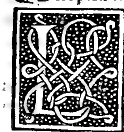
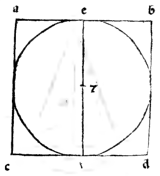
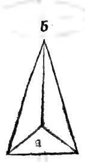
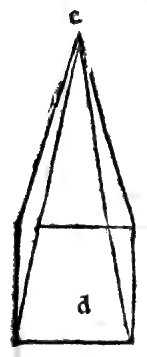
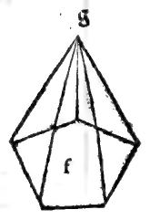

CHAPTER LXV¶
On Lateral (Polygonal) Pyramids and Their Varieties: Right, Oblique, and Truncated (Plates LI–LIX).

Just as lateral columns have infinitely many species according to the polygons of their bases, so lateral pyramids (pyramidi laterate, Plates LI–LIX) have infinitely many species derived from their corresponding lateral columns.
Definition and Derivation of Lateral Pyramids ([XI.Def.12])
In the eleventh book, our philosopher defines the lateral pyramid as a solid figure contained by plane surfaces that rise from a single plane base to meet at a single opposite point overhead, called the cone or apex (cono dela pyramide).
Triangular Lateral Faces: In every lateral pyramid, all the lateral surfaces surrounding it (except the base itself) rise to meet at the single apex (cono) and are therefore triangles, whereas the base may be a triangle (as in Pyramid
Awith apexBin marginal diagram0055.g1.png), a quadrangle (PyramidDwith apexEin0055.g2.png), a pentagon (PyramidFwith apexGin0055.g3.png), a hexagon, or any polygon whatever (see Plates LI–LVI).Derivation from the Corresponding Column: Every lateral pyramid is generated from its corresponding lateral column by fixing a single point in the upper base of the column and drawing straight lines from that point to all the vertices of the lower base: the resulting pyramid has as many triangular lateral faces as the base has sides, and shares the same name (trigona/triangulare, quadrilatera, pentagona, etc.) as its column.
Right (*Recta a Livello*) vs. Oblique/Declining (*Declinante ouer China*) Pyramids:
It is not necessary that the apex point fixed in the upper plane lie directly over the exact center of the lower base: so long as straight lines are drawn from that apex to the corners of the base, a pyramid is formed.
When the apex lies directly over the center of the base (so that the axis falls at right angles to the base), it is called a right or plumb pyramid (pyramide recta a livello); when the apex leans to one side, it is called a declining or oblique pyramid (declinante ouer china).
Short or Truncated Pyramids (*Pyramidi Curte, Troncate, ouer Scapezze*):
Finally, there are pyramids that do not rise all the way to their apex (cono), having their top sliced off parallel to the base; these are called short, truncated, or lopped pyramids (pyramidi curte, troncate, scapezze, ouer tagliate), whether round (frustum of a cone, Figure
Aon Folio 0056) or lateral—such as the truncated triangular pyramid (FigureB) and the truncated quadrangular pyramid (FigureCand Plates LVII–LVIII (Piramide Tronca Solida / Vacua)).
Marginal Woodcut Diagrams (Paganini 1509)¶

Folio 0055 Diagram 3¶

Folio 0056 Diagram 1¶

Folio 0056 Diagram 2¶

Folio 0056 Diagram 3¶